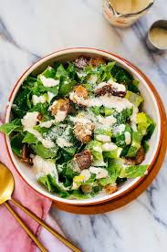

Caesar Salad

Description
Caesar salad is made with romaine lettuce, croutons, Parmesan cheese, and Caesar dressing. The dressing is a mixture of olive oil, lemon juice, Worcestershire sauce, Dijon mustard, and garlic.
Ingredients
- 1 large or 2 small heads of romaine lettuce
- Parmesan cheese, shredded or shaved
- Crisp croutons
- Caesar salad dressing
Steps
- Chop romaine lettuce
- In a large mixing bowl, combine all of your ingredients and toss gently to coat the lettuce in caesar dressing